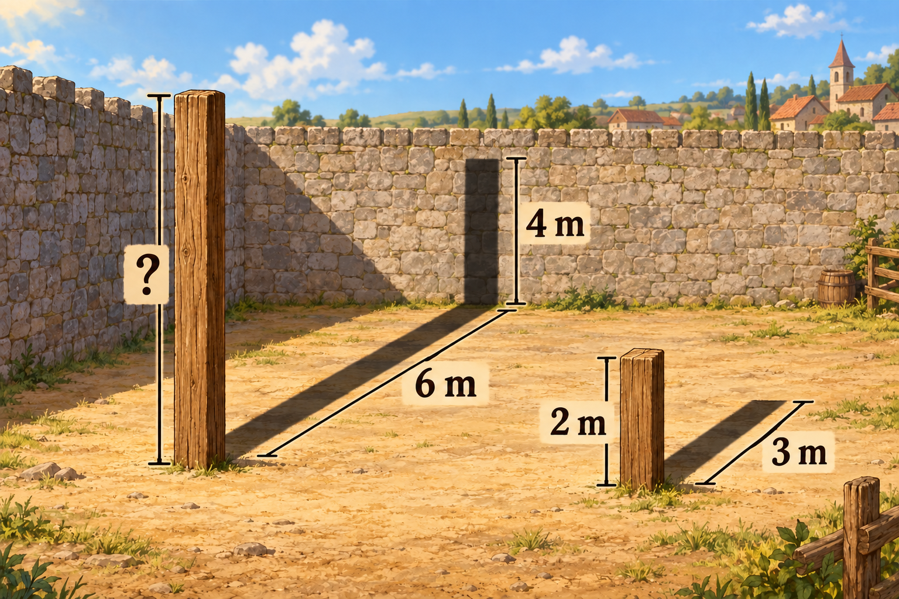

João decidiu construir um galpão para abrigar os cavalos do vilarejo. Quando chegou ao terreno, seu ajudante já havia fincado os dois postes de madeira que sustentariam parte do telhado.
Precisando descobrir a altura do poste maior, João percebeu que não tinha uma escada para alcançar seu topo. Resolveu, então, observar as sombras e calcular.

Qual é a altura do poste maior, em metros?